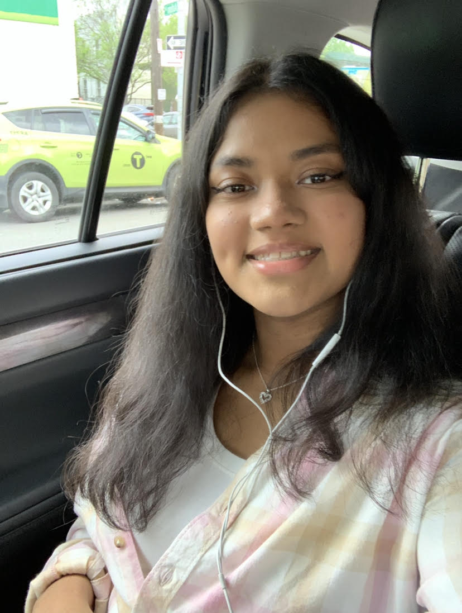
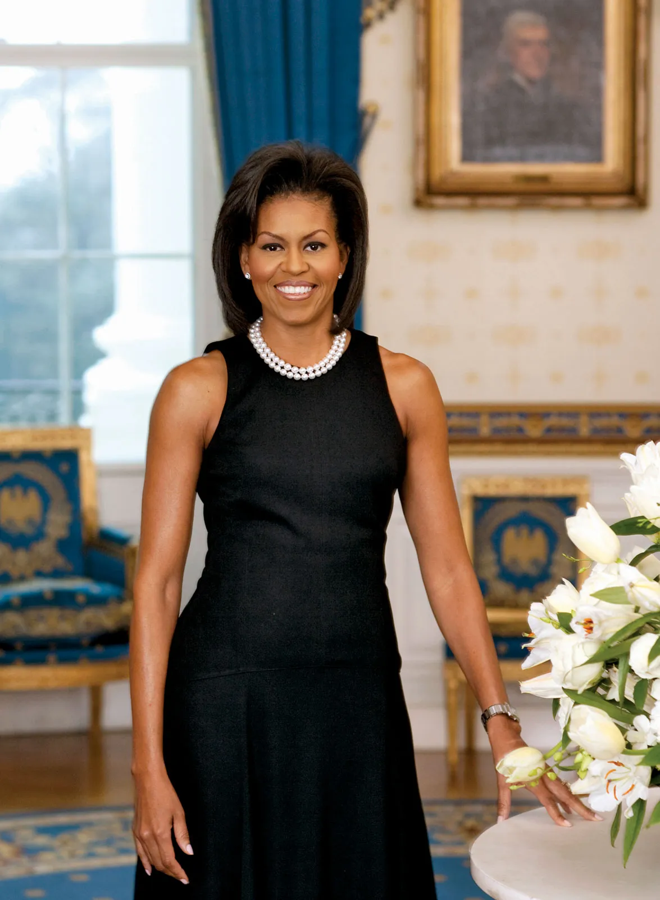

Wajiha Moin
Welcome to Wajiha's Personal Profile Page! This page will give you an opportunity to learn more about Wajiha through her interests and experiences.

Biography
Wajiha Moin is a rising senior who is currently attending The Brooklyn Latin School, in Bushwick. She is interested in studying Biomedical Engineering and Computer Science in the future. Wajiha and her family are from Bangladesh, now living in New York City. Her passions lie at the intersection of technological innovation and uplifting underrepresented groups. Wajiha is currently a student at the TECH360 Summer Bootcamp at America on Tech (AOT).

Interesting Facts
Wajiha enjoys cooking and trying new foods from different cultures. One of her favorite dishes to make is pasta!
She recently got a new kitten, named Romi! He's about one month old!
Wajiha really loves going on rollercoasters! Her favorite one at the moment has to be the Thunderhawk at Dorney Park & Wildwater Kingdom.
Wajiha enjoys spending her free time reading. One of her favorite book series is called The Infernal Devices, by Cassandra Clare!
She also spends her free time watching TV shows and K-dramas. Her favorite TV show is The Good PLace!
Resume
Education
The Brooklyn Latin School, Brooklyn, NY
June 2024
GPA: 4.00/4.00
Related Coursework:
Relevant Experience
Niura, New York, NY
Intern, June 2023 - Present
- Collaborated on the development of research papers, abstracts, and business models accepted at the Biomedical Engineering Society's annual convention
- Implemented social media outreach initiatives to enhance company visibility and engagement
- Analyzed existing grant application processes to secure funding for project advancements
- Refined aspects of research and development to ensure the product becomes accessible and reliable
The Brooklyn Public Library, Brooklyn, NY
Peer Leader Intern, September 2020 - Present
- Offered valuable guidance to interns in the Teen Techies program, imparting effective stress management and project strategies
- Conducted regular assessments of interns' progress, ensuring alignment with development goals
- Contributed significantly to the organization and execution of the library's annual tech conference
Northside Charter High School, New York, NY
Opperational Support, June 2023 - August 2023
- Guided and supported 50+ students in the Summerbridge Program, fostering their educational and personal growth
- Efficiently organized and prepared 25+ classrooms in anticipation of the new school year
- Designed vibrant flyers for school-wide events, fostering a sense of unity and engagement within school community
Extracurricular Activities
Teens Teach Technology, New York, NY
Executive Public Relations Coordinator, September 2022 - Present
- Facilitated bi-weekly orientation meetings for incoming members regarding the public relations team
- Addressed questions and concerns, fostering a welcoming environment and encouraging active participation from new members
- Assigned and reviewed assignments for members to build global and national outreach with nursing homes and libraries
Skills
Computer: Microsoft Word, Excel, PowerPoint; Google Docs, Google Sheets, Google Slides; Canva
Language: Professional profieciency of English, Native profieciency of Bengali, Intermediate profieciency of Spanish
Honors & Awards
Honor Roll, June 2023
New York State Comptroller Award, June 2020
Role Model

“Don't ever make decisions based on fear. Make decisions based on hope and possibility. Make decisions based on what should happen, not what shouldn't.” - Michelle Obama